+++
title = "Atık Malzeme ile Tasarım"
description=""
url="sayi-12/atik-malzeme-ile-tasarim"
aciklama="Atık, insanların artık ihtiyaç duymadığı veya duymadıklarını düşündükleri, amacı anlaşılamayan ürünler ve bir ürünün üretimi sırasında ortaya çıkan kullanılmış/kullanılmamış yan ürünlerdir."
type="sayfa"
thumb="/img/"
date = "2021-08-10"
sayi=["12"]
sayfa="02"
yazar=["hilal doruk"]
tags= ["ana sayfa", "dergi"]
+++

<div class="container">
   <div class="row">
      <div class="col-md-6">
         <p>
            Atık, insanların artık ihtiyaç duymadığı veya duymadıklarını
            düşündükleri, amacı anlaşılamayan ürünler ve bir ürünün üretimi
            sırasında ortaya çıkan kullanılmış/kullanılmamış yan ürünlerdir.
         </p>
         <p>
            İnsanlık olarak daha fazla şey satın aldıkça veya yaptıkça daha çok
            atık oluştururuz. Bu atıkların çevreyi birçok şekilde kötü
            etkilediğini biliyoruz. Kaynakları sınırlı dünyamızda atık olarak
            değerlendirdiklerimizi ve atık anlayışımızı sorgulamamız gerekir.
            Atıklarımızı geri dönüşüm gibi (3R: Reduce-Reuse-Recycle)
            yöntemlerle tekrar değerlendirebiliyoruz. PET, metal, kağıt gibi iyi
            çalışan geri dönüşüm sistemlerini bugün yaygın bir şekilde
            kullanıyoruz. Geri dönüşüm sürdürülebilirlik açısından en iyi etki
            yaratan sistem değildir. En az etkili olandan en etkili olana doğru
            sıralama: Recycle-Reuse-Reduce (Geri dönüştür-Yeniden
            kullan-Kullanımını azalt).
         </p>
         <p>
            Yeniden kullanım (Reuse) atık olarak gördüğümüz ürünü bir şekilde
            atmayıp değerlendirmekle ilgilidir; bu kişiden kişiye göre değişir.
            İleri dönüşüm (Upcycle) ise eski malzemeyi güçlendirmek ve
            tasarımcıların atılan tüketici ürünlerini yeni ve değerli
            kullanımlara sokmaya çalıştığı
            <em>sorumlu</em> bir tasarım yaklaşımıdır. [Crabbe, 2012] [1]
         </p>
         <p>
            Geri dönüşüm (Recycle) orijinal malzemeyi yeniden işlemek veya başka
            bir malzemeye dönüştürmektir. Metal, plastik, kağıt ve cam gibi
            tüketici ürünlerini temel malzemelerinden daha az değerli taze
            tüketici ürünleri yapmak için kullanır. Basit bir ifadeyle geri
            dönüşüm, bir ürünün yaşam döngüsünü uzatan kimyasal bir süreçtir.
         </p>
         <p>
            Bu yazıda geri dönüştürülmüş malzemelerden yola çıkılarak yapılan
            bazı tasarımları; ürün tasarımı sürecine başlarken
            kullanılmış/kullanılmamış, endüstriyel/kullanım sonrası atıkları
            kullanarak tasarım sürecinin nasıl işlediğini veya işleyebileceğini
            ve geleneksel tasarım sürecine göre farklarını inceleyeceğiz. Bir
            sonraki yazıda ise ileri dönüşüm yöntemi ile ürün tasarımına ve
            Dutch Kavramsal Tasarım Akımı&#39;na göz atacağız.
         </p>
      </div>
      <div class="col-md-6">
         {{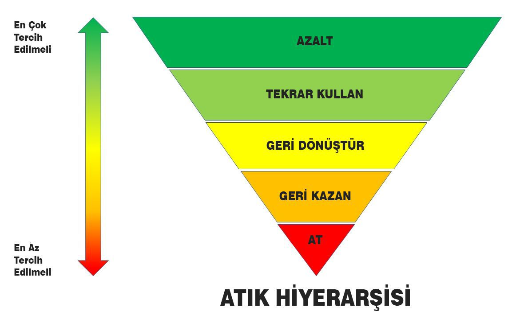}}
      </div>
   </div>

   <div class="row">
      <div class="col-md-6">
         {{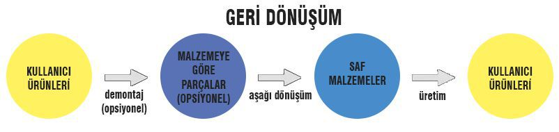}}
      </div>
      <div class="col-md-6">
         {{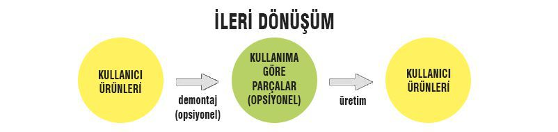}}
      </div>
   </div>
   <hr>

   <p>
      <a href="https://www.futurematerialsbank.com/" target="_blank"
         >Materials - Future Materials Bank</a
      >
   </p>
   <p>
      &quot;Future Materials Bank (Geleceğin Materyalleri Bankası), sanatçılar
      için toksik olmayan, biyolojik olarak parçalanabilen veya başka türlü
      sürdürülebilir alternatif malzemeler öneren malzemelerin buluşma yeridir.
      Jan van Eyck Academie&#39;deki Doğa Araştırmaları departmanı tarafından MA
      Materials Futures ile işbirliği içinde başlatılmıştır. Londra&#39;daki
      Central St Martins&#39;de. İçerik, tamamı Green Art Lab Alliance&#39;ın
      bir parçası olan Asya, Latin Amerika ve Avrupa&#39;daki 45 sanat
      organizasyonu tarafından kitle kaynaklıdır. toksik ve sürdürülebilir
      sanatsal uygulama. Bu, kullandığımız malzemeler hakkında daha bilinçli
      seçimler yapmayı öğrenmeye devam etmek için devam eden araştırmamız ve
      sürekli girişimimizdir.&quot;
   </p>
   <hr>
   <p>
      Endüstriyel atıklardan ürün tasarımı üzerine yapılan araştırma sonuçları
      yayımlanan bir makalede:
   </p>
   <p>
      Geri dönüştürülmüş ürünlerin seri üretilmeye (%80), yeniden kullanılmış
      ürünlerin ise el yapımı üretilmeye (%70); ürünlerin (hem geri dönüşüm hem
      ileri dönüşüm) çoğunlukla seri üretilmeye (%60) yatkın oldukları,
   </p>
   <p>
      seri üretim veya el üretimi türlerinde birçok ürünün iyi kurulmuş/işleyen
      bir geri dönüşüm sistemi olmadığı belirtilmiştir. [2]
   </p>

   <div class="row">
      <div class="col-md-6">
         <p>
            Bu makalede yazarlar-araştırmacılar, atık malzemeyle tasarım
            sürecinin geleneksel süreçten farklı olması gerektiğini belirtiyor
            ve bir ön-tasarım süreci önerisinde bulunuyor. Geleneksel Süreçte
            tasarımcı ne tasarlayacağını bilir, sıklıkla kullanıcılar ve
            ihtiyaçları hakkında bilgi sahibidir. Atık malzemeyle tasarım
            sürecinde ise başlangıç noktası: belirlenen malzemeyi kullanarak
            hangi soruna nasıl ve ne ile çözüm bulacağıdır. Bu yüzden atık
            malzemeyle tasarım sürecinde ise öncü aşamalara ihtiyaç olduğunu
            belirtiyorlar.
         </p>
         <p>
            Önerdikleri geleneksel tasarım sürecinden önce uygulanacak olan
            süreç, temelde geleneksel tasarım süreciyle benzer ama özneleri
            bağlamında farklıdır; zira tasarım sürecinde temel olarak önce
            fikirler üretilir ve ardından bu fikirler değerlendirilip elimine
            edilir veya tutulur, sonra aynı adımlar tekrarlanır:
            <em>detaylandırma</em> (elaborative) ve
            <em>indirgeme</em> (reducing).
         </p>
         <p>
            Genişletilmiş-Atık Malzemeyle Öncü Tasarım Sürecinde ise Geleneksel
            Tasarım Sürecinin işlevlerinin bir kopyası fakat özneleri farklı:
            malzeme. Bu öncü süreç ile malzeme Analiz, Fikir Üretme, Tarama
            (Eleme) gibi aşamalardan geçer. Kısacası geleneksel süreç ile
            başlamadan önce detaylı bir malzeme bilgisi, söz konusu malzemeyle
            bilinen kullanım ve özellikleri yanı sıra yeni kullanımların keşfi
            ve deneylenmesi, daha sonra ise üretilen bu fikirlerin
            değerlendirilmesi gerekiyor. [2]
         </p>
      </div>
      <div class="col-md-6">
         {{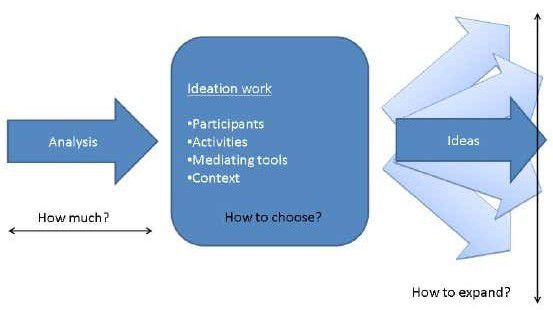}}
         <p>
            Aşamalarla ilgili ne kadar analiz yapılmalı, ne kadar detay gerekli,
            nasıl seçim yapılmalı, fikirlerin çeşitliliği nasıl genişleyebilir
            gibi soruların cevapları için kaynaklarda belirttiğimiz makalenin
            web sitesine bakmayı unutmayın.
         </p>
      </div>
   </div>

   <p>
      Bu makaleden endüstriyel tasarım yüksek lisans öğrencileriyle, üretici
      firmalarla ve tasarımcılarla yapılan analizde söz konusu olan geri
      dönüştürülmüş ve ileri dönüştürülmüş ürün tasarımlarından, geri
      dönüştürülmüş malzeme ile tasarlanmış bazı ürünlere ve bu makalede analiz
      edilmeyen geri dönüştürülmüş malzemelerden yapılan çalışmalara göz
      atacağız.
   </p>

   <h2>1. Studio ThusThat</h2>
   <p>
      Madencilik ve metalurji alanlarındaki endüstriyel atıkları bilimsel
      araştırmalar yapıp endüstriyel pratikler uygulayan Studio ThusThat bu
      gözden kaçan malzemelerle üretim yapıyor. Studio ThusThat, malzemelere
      ilgi duyan üç tasarımcıdan oluşan bir gruptur. Royal College of Art ve
      Imperial College London&#39;ın yeni mezunları, İnovasyon Tasarım
      Mühendisliği alanında yüksek lisanslarını tamamladılar.
      &quot;...entelektüel açıdan ilgi çekici, estetik açıdan zengin ve
      nihayetinde daha geniş bir kitle tarafından erişilebilir.&quot;
   </p>

   {{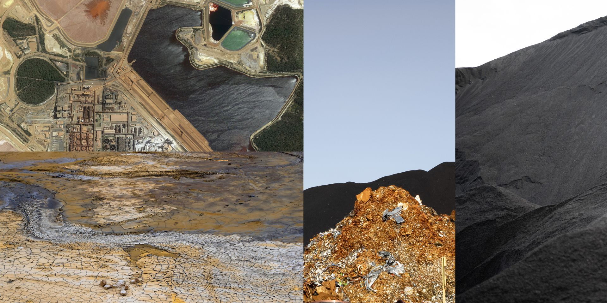}}

   <h3 id="red-mud-projesi">Red Mud Projesi</h3>
   <div class="row">
      <div class="col-md-6">
         <p>
            Alüminyum endüstrisinde atık yan ürün olan boksit kalıntısı kırmızı
            çamur, fabrikalar ve araştırma laboratuvarları ile çalışılarak
            seramik ürünlere ve sırlamalara dönüşüyor. Her alüminyum parçasının
            üretimi sonucu iki parçadan fazla kımızı çamur da üretiliyor. Her
            yıl 150 milyon tondan fazla kırmızı çamur dev çukurlara bırakılıyor.
            ThusThat&#39;tan önceki geliştiriciler kırmızı çamurdan tuğlalar
            yaparak Jamaika&#39;da ve Hindistan&#39;da evler inşa etti; fakat
            başka ülkelerde hem yasal engellerden hem de malzemenin ününden
            dolayı bu evler inşa edilemedi. Studio ThusThat, endüstriyel
            atıkların kuşbakışı fotoğraflarını &quot;tuhaf&quot; sanatsal bir
            ifade katarak çektiler. Malzemenin ekonomik ve lojistik açıdan zorlu
            şartlarına da çözüm bulmaya çalışan Studio ThusThat, malzemenin
            yarattığı kötü ünü, kırmızı çamurun aslında potansiyel
            sürdürülebilir bir kaynak olabileceği fikri ile değiştirmeye
            çalışıyor.
         </p>
         <blockquote>
            <p>
               &quot;Seramik için kullanılan bazı geleneksel aletler ve standart
               güvenlik yönergeleri ile başladık. İnsanlar seramik işini kolay
               görse de, öyle değil ve kırmızı çamur ile teknik özellikleri
               birbirinden ayırmak farklı bir çaba. Tasarım eğitimi olmayan bir
               eğitim geçmişimizin olmasından dolayı özellikle muntazam
               tasarımlara izin vermek için malzemenin doğru bileşimini elde
               etme görevi biraz zordu.; aksi gibi görünse de bu kesinlikle
               bilimseldir. Bir karışım yapmak için sadece su eklemek kadar
               basit değil. Hem deneyden hem de denemeden biraz. Karışımımızda
               istediğimiz kaliteye ulaşmak için zaman zaman ekmek yapma
               karışımı da kullandık. Mart 2020&#39;de Covid-19 karantinası
               gerçekleştiğinde, doğru bir karışım elde etmek için testlerimizi
               yapmak için yaklaşık iki ay harcadık.&quot;
            </p>
         </blockquote>
         <p>
            Stüdyo kırmızı çamuru karolar ile mimarlık endüstrisinde de
            kullanmaya hazırlanıyor.
         </p>
         <p>
            <a href="https://player.vimeo.com/video/399001970" target="_blank"
               >https://player.vimeo.com/video/399001970</a
            >
         </p>
      </div>
      <div class="col-md-6">
         {{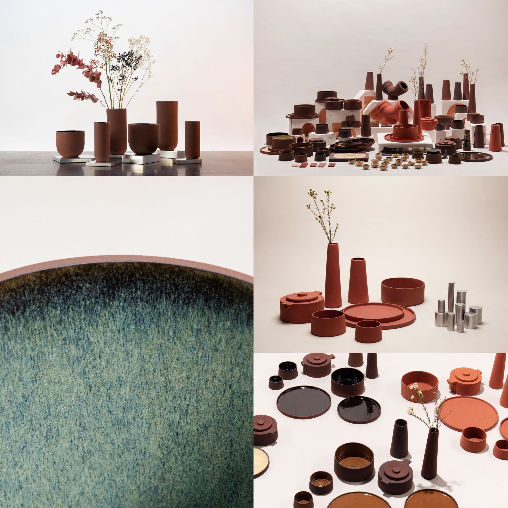}}
      </div>
   </div>

   <h3 id="copper-projesi">Copper Projesi</h3>
   <div class="row">
      <div class="col-md-6">
         <p>Bakır Üretim Süreçlerindeki Endüstriyel Yan Ürünler</p>
         <p>
            Bakırın kullanıldığı ürünleri etrafımızda bolca bulabiliriz. Bakırın
            kullanılmasının veya geri dönüştürülmesinin sonucu olarak:
            madencilik fazlalığı, atıklar, metal konsantreleri, cüruf, altın ve
            gümüş gibi nadir metaller, sülfürik asit ve sülfat çözeltisi ve daha
            fazlası gibi bu gözden kaçan yan ürünler için Studio ThusThat, yeni
            kullanım alanları yaratmaya çalışıyor.
         </p>
         <p>
            Eritme işleminden arta kalan saf olmayan cüruf, pirometalurjik
            saflaştırma sırasında çıkarılır ve eritilmiş halde dökülür.
            Soğudukça siyah camsı bir taşa dönüşür. Bu süreç lavın soğumasına
            benzetilebilir.
         </p>
         <p class="bg-grey p-md-3">
            &quot;Geopolimerizasyon, standart çimentoya yüksek performanslı
            alternatifler oluşturmak için yaygın inorganik bileşikleri kullanan
            bir teknolojidir. Cüruf zaten yüksek sıcaklıkta ergitme sürecinden
            geçtiği için reaktiftir ve bağlayıcı olarak kullanılmaya hazırdır.
            <strong>Böylece çimento ihtiyacının yerini alıyor.</strong> Ek
            olarak, kum yerine agrega olarak cürufun daha kaba formları
            kullanılabilir. Sonuç, standart çimentodan yaklaşık %77 daha düşük
            CO2 ayak izi ile cüruftan yapılmış çok güçlü siyah beton benzeri bir
            gövdedir.&quot; -S. ThusThat
         </p>
         <p>
            Geopolimer cüruflar ile sandalyeler, masalar, tabureler ve bakır
            atıklarından lambalar ve çeşitli göstermelik ürünler üretiyorlar.
            Studio ThusThat, cürufu daha rafine, toz halinde ve daha kaba, kum
            biçiminde kullandı.
         </p>
      </div>
      <div class="col-md-6">
         {{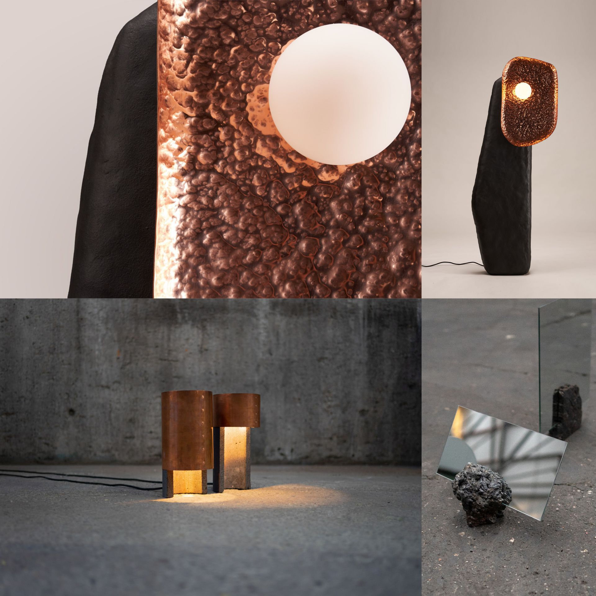}}
      </div>
   </div>

   <div class="row">
      <div class="col-md-6">
         {{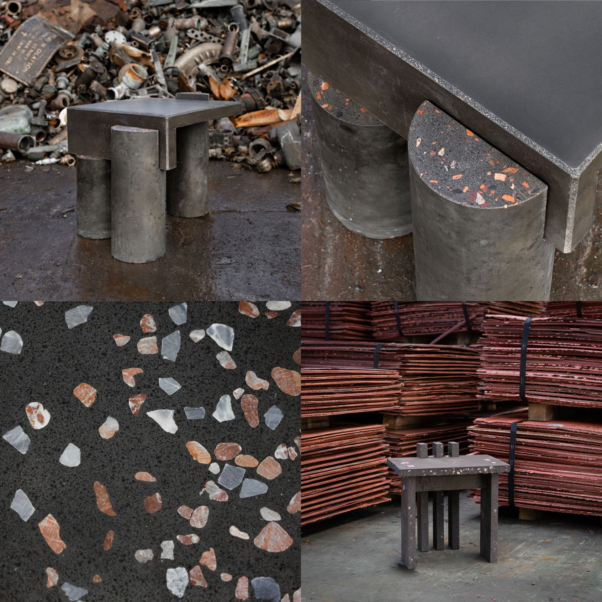}}
         <p>
            Üstteki Column Sandalye, geopolimer cüruf sandalye. Alttaki Molten
            Sandalyeyi yapmak için tasarımcılar, erimiş bakır ile bakır
            levhaları birleştirdiler.
         </p>
         <blockquote>
            <p>
               &quot;Bilimle sinerji bizim için çok önemliydi ve yenilikçi
               tasarımlarımız için çeşitli diğer materyallerle keşfetmeyi dört
               gözle bekliyoruz&quot;
            </p>
         </blockquote>
      </div>
      <div class="col-md-6">
         {{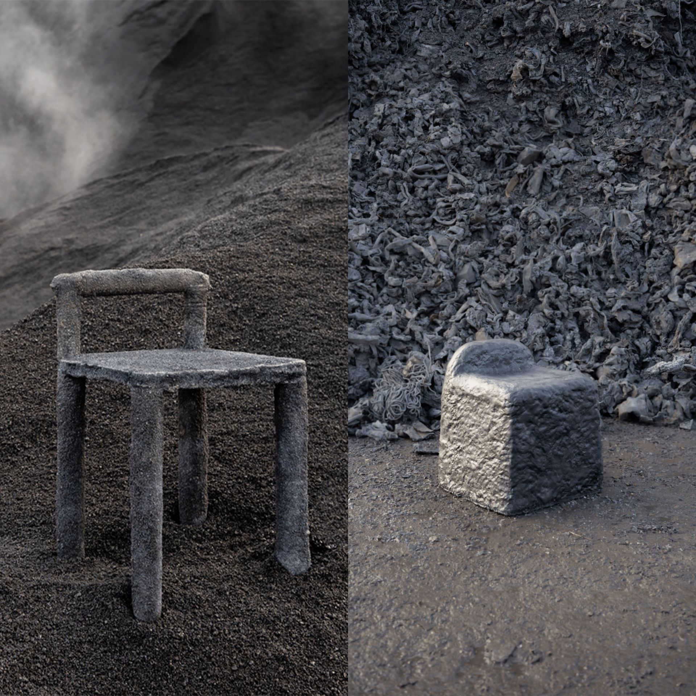}}
         <p>
            Soldaki Sparkly Black Sandalye, doğrudan bir kaba bakır cüruf
            yığınına döküldü. -geleneksel kum döküm işlemine benzer.- Sağdaki
            Cobbed Sandalye ise, harç hamurunun bir form üzerinde elle
            şekillendirilmesiyle yapılmıştır. Sonuç olarak, daha organik,
            düzensiz bir forma sahiptir.
         </p>
         <a
            href="https://www.instagram.com/p/B9Up9QGJGso/?utm_source=ig_web_copy_link"
         ></a>
      </div>
   </div>

   <hr>

   <h2>2. Fernando ve Humberto Campana</h2>
   <p>
      Biri mimar diğeri alaylı sanatçı olan Campanalar, tasarımlarında ip,
      plastik borular, kablolar, peluş hayvanlar gibi gelenekselden uzak
      malzemeler kullanıp farklı formlar oluşturuyor.
   </p>

   <div class="row">
      <div class="col-md-6">
         <h3 id="favela-sandalye-ahşap-artıklarından">
            Favela Sandalye, Ahşap Artıklarından
         </h3>
         {{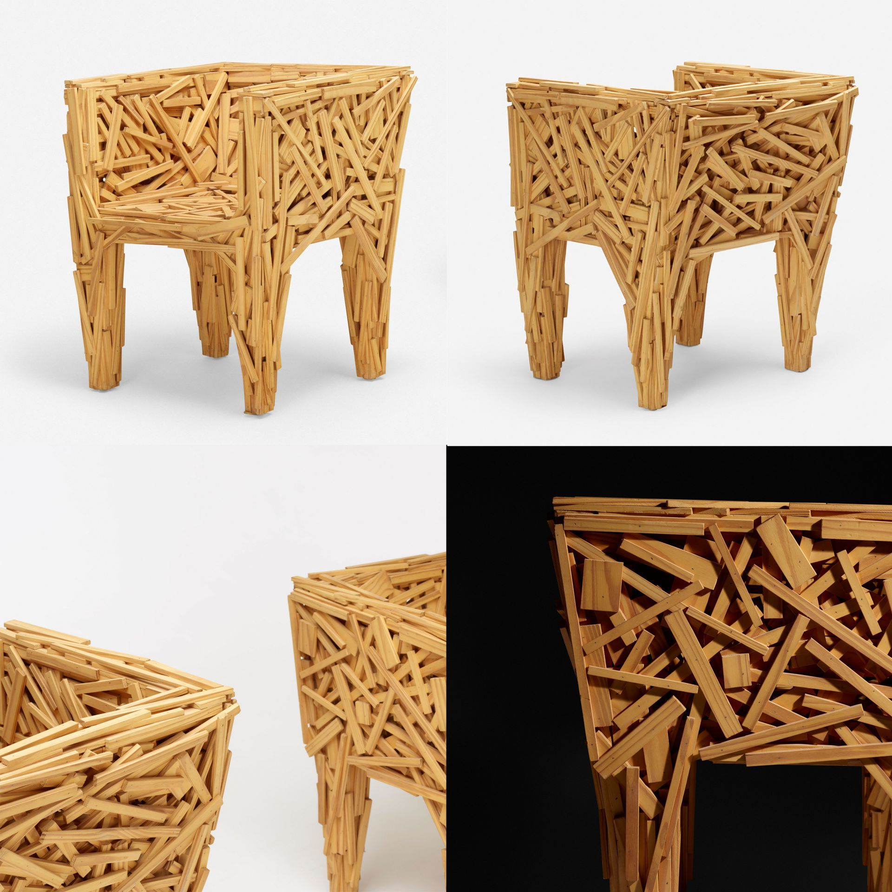}}
         <p>
            &quot;İlkel bir taht&quot; a benzeyen Favela Sandalye,
            Brezilya&#39;daki favelaların (gecekondu), inşasında kullanılmış
            ahşaplardan, elle yapıştırılıp çivilenerek yapıldı. İç mekan için
            çam, dış mekan için tik kerestesi kullanılan Favela Sandalyelerin
            parçaları elle rastgele birleştirildiğinden her biri birbirinden
            farklı biçimdedir.
         </p>
      </div>
      <div class="col-md-6">
         <h3 id="sushi-mobilyalar-kumaş-artıklarından">
            Sushi Mobilyalar, Kumaş Artıklarından
         </h3>
         {{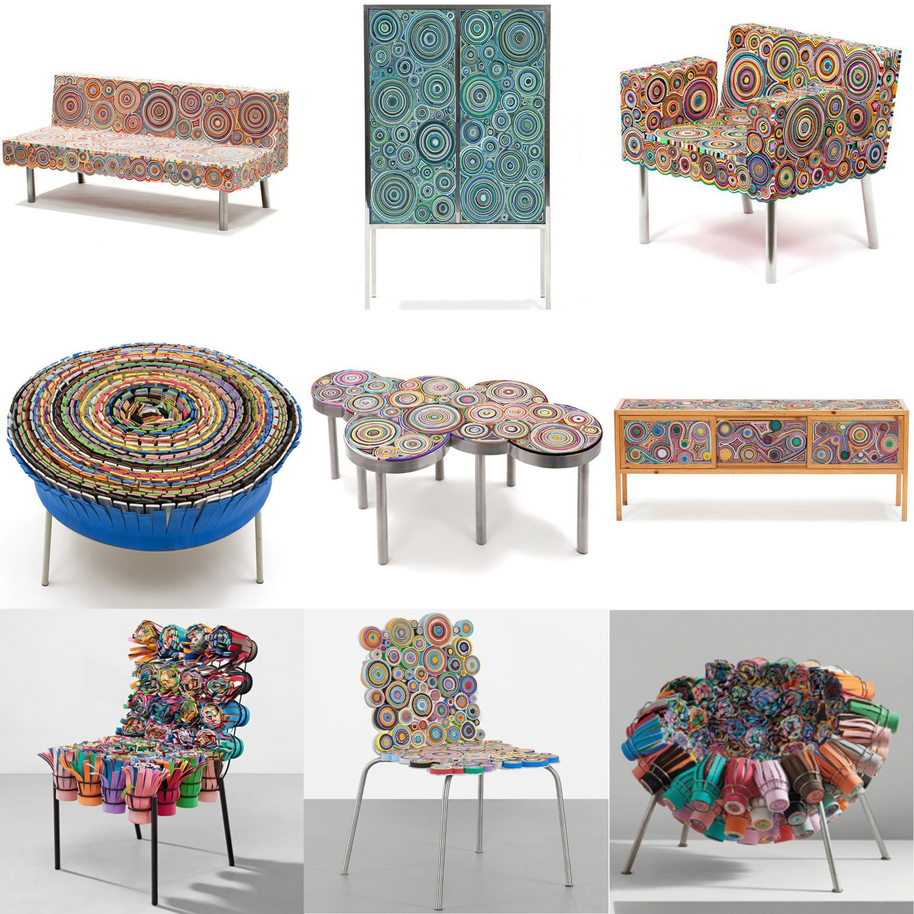}}
         <p>
            Peluş oyuncak, kumaş, yastık gibi malzemelerle mobilyaları
            oluşturuyorlardı, sonunda tasarımcıları kauçuk ve halı dahil olmak
            üzere atılan kumaş yığınları, çocukluklarından kalma peluş
            oyuncaklarla denemeler yapmaya yönlendirdi.
         </p>
      </div>
   </div>

   <hr>

   <h2>3. Daniel Michalik</h2>
   <h3 id="meşe-mantarından-mobilyalar-ve-nesneler">
      Meşe Mantarından Mobilyalar ve Nesneler
   </h3>
   <p>
      Her ürün %100 geri dönüştürülmüş mantar ile üretiliyor ve bazıları
      boyanıyor. Mantarın esneklik, yumuşaklık ve sağlamlık dengesini formlarla
      dengeleyebiliyor; Cortiça Şezlong kesikli gövdesi ile hem yan yana hem de
      önden arkaya hafifçe sallanmaya izin vererek yüzme hissi sağlıyor.
   </p>
   <blockquote>
      <p>
         “Mantarın diğer malzemelerin alamadığı bu şekil ve formları
         alabileceğini fark ettim. Bunun da ötesinde, doğal ve kendi kendini
         yeniliyor, bu yüzden plastik ve metallerin sunduğu çevresel sorunlarla
         uğraşmıyordum.” “Bunun güzel yanı çok fazla israf olmaması. Ben sadece
         bir yaprak ya da sıkıştırılmış tanecikli parçalar alıyorum ve hepsini
         oyuyorum...&quot;
      </p>
   </blockquote>
   <div class="row">
      <div class="col-md-4">
         {{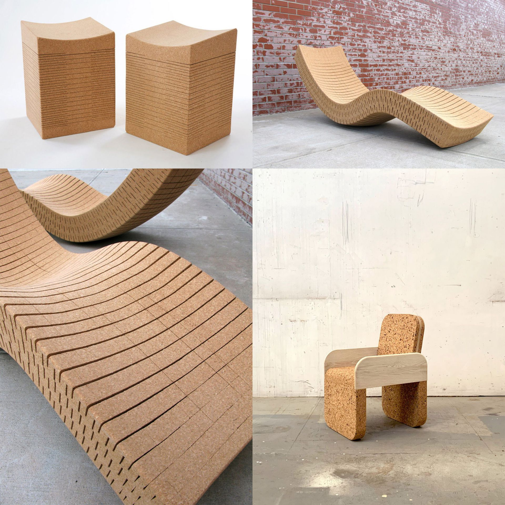}}
         <p>
            Sol üstte: Sway Taburede, merkezi sütun kullanıcının omurgası
            doğrultusundadır, dışarı doğru ise esneklik katan kesikler vardır.
            &quot;Sonuç, kullanıcının ağırlığı altında esneyen ve dönen, en
            küçük hareketlere yanıt veren bir taburedir. Kullanıcının kasları,
            dengeyi korumak, duruş ve dolaşımı iyileştirmek için hafifçe meşgul
            kalır.&quot;
         </p>
      </div>
      <div class="col-md-4">
         {{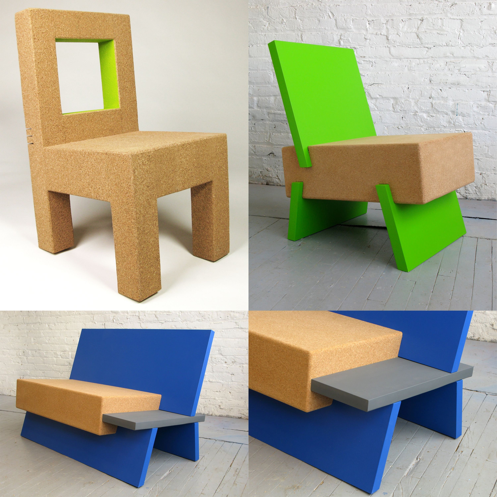}}
         <p>
            Sol üstte: Tilter Sandalye, Shaker yemek sandalyelerinden ilham
            alarak yapıldı. Arkasındaki 3 kesik kullanıcının birkaç dereceyle
            arkaya yaslanması ile esnek harekete izin veriyor.
         </p>
      </div>
      <div class="col-md-4">
         {{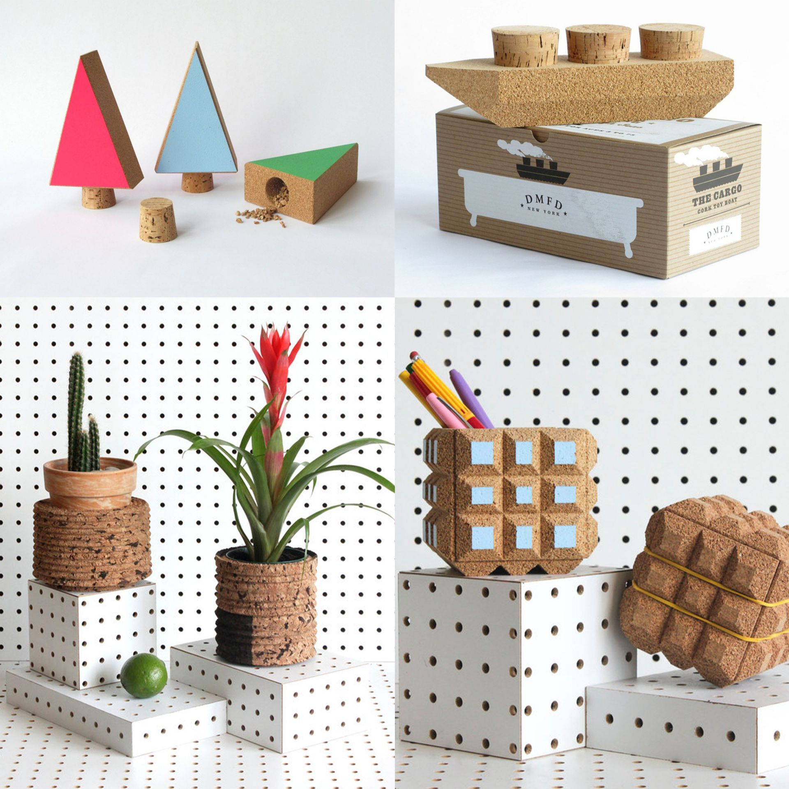}}
         <p>
            Sağ üstte: İnteraktif, yüzen &quot;mantar&quot; tekneler çocukların
            banyo zamanı için üretildi.
         </p>
      </div>
   </div>

   <blockquote>
      <p>
         “Malzeme seçiminde kapsamımızı genişletirsek, form ve tasarım, imalat
         ve bununla birlikte gelen her şeyde de kapsamımızı genişletiriz”
      </p>
   </blockquote>
   <hr>
   <h2>4. Jurgen Bey</h2>
   <h3 id="bitki-atıklarından-bahçe-bankı-ve-sandalye">
      Bitki Atıklarından Bahçe Bankı ve Sandalye
   </h3>
   <div class="row">
      <div class="col-md-6">
         <p>
            Eleştirel Tasarım hareketinin temsilcisi olarak bilinen Hollandalı
            Jurgen Bey&#39;in çalışmaları Droog Design aracılığıyla tanındı.
            Tree-Trunk Bank için Felemenk Kavramsal Tasarımı&#39;nın (Dutch
            Conceptual Design) etkisinin görüldüğü söylenebilir.
         </p>
         <blockquote>
            <p>
               &quot;Endüstriyel bir sürecin sonucu olarak tek bir ürünle çok
               fazla ilgilenmiyorum, daha çok tüm sistem için: çalışma ortamı,
               ona yönelen işler, kullanılan malzeme...&quot;
            </p>
         </blockquote>
         <p>
            Eleştirel Tasarım üzerine: &quot;Neden oldukları gibiler, nasıl
            geliştirebilirler, neyi durdurmalıyız ve tasarımcılar olarak buna
            nasıl katkıda bulunabiliriz? Böylece insanlarla konuşabiliyor ve
            toplum için sorumluluk alıyoruz. Tasarım değişim yaratabilir.&quot;
            -Jurgen Bey.
            <em
               >2012 tarihinde Milano&#39;daki Triennale&#39;de katıldığı bir
               konferansta yapılan röportajdan.</em
            >
         </p>
      </div>
      <div class="col-md-6">
         {{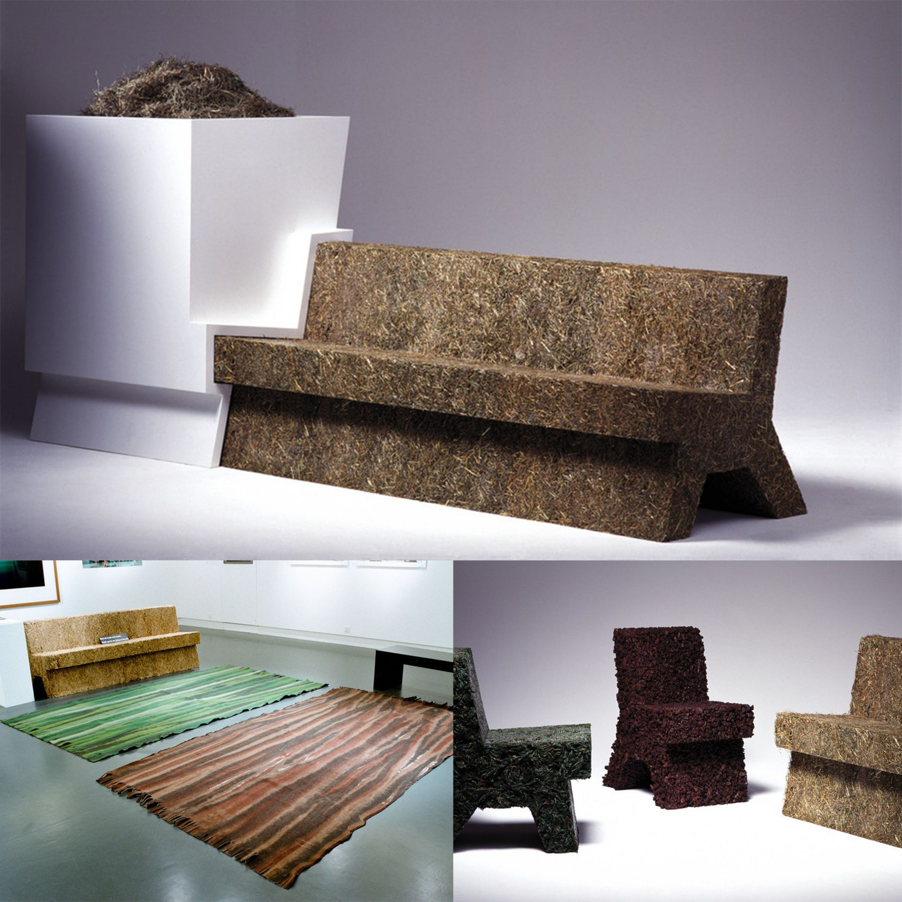}}
         <p>
            Saman, yaprak ve ağaç kabuğu gibi park atıklarından bahçe bankı
            üretebilmek için bir makine ile tasarlandı. Bu organik bank için
            bahçe çöpleri makinede preslenir ve zamanla bank daha da uzar, ta ki
            bankın kendisi tekrar doğaya dönene kadar.
         </p>
      </div>
   </div>

   <hr>

   <h2>5. Krill Design</h2>
   <h3 id="portakal-kabuklarından-masa-lambası-ohmie">
      Portakal Kabuklarından Masa Lambası <strong>Ohmie</strong>
   </h3>
   <p>
      Organik malzemelerin geliştirilmesi üzerine çalışan Milano merkezli bir
      start-up, Krill Design, bulunduğu bölgeden hareketle bir lamba üretti:
      &quot;Aynı anda hem estetik hem de fonksiyonel olan eko-tasarım
      ürünü&quot;
   </p>
   <p>
      Portakal kabuklarından yapılmış kompostlanabilir biyopolimer lambanın
      kendisi de artık &quot;atık&quot; olarak değerlendirildiğinde organik ev
      atıkları gibi kompostlanabiliyor. Biyolojik kaynakların israfını ele
      alarak tasarımcıları &quot;Tasarım Devrimi&quot; yapmaya çağırıyor.
   </p>
   <blockquote>
      <p>
         &quot;Ohmie Turuncu Lamba, uzun ömürlü bir dekor öğesi olarak
         tasarlanmıştır, ancak organik atıklarınızla sürdürülebilir bir şekilde
         atılabilir. &#39;Sürdürülebilir Tasarım&#39; ve &#39;Normal
         Tasarım&#39; arasında bir ayrım olmaması gerektiğine, bunun yerine
         tasarımın varsayılan olarak sürdürülebilir olması gerektiğine
         inanıyoruz: bu, uygulamaları bilinçli hale getirmek, malzemeleri
         restore etmek ve &#39;Sürdürülebilir Dairesel Tasarım&#39; (Sustainable
         Circular Design) yapmak için Tasarım Devrimi&#39;ne doğru ilk adımdır.
         ”
      </p>
   </blockquote>

   <div class="row">
      <div class="col-md-6">
         {{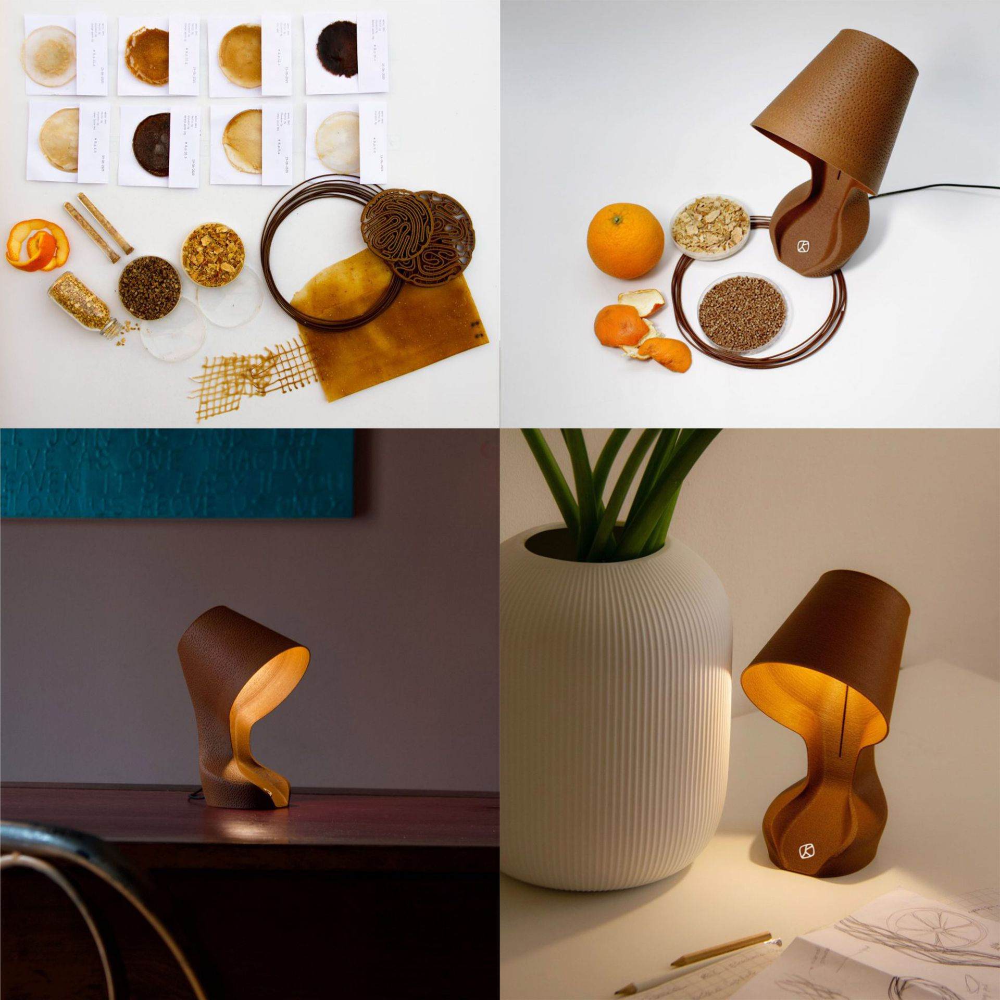}}
      </div>
      <div class="col-md-6">
         <p>
            Narenciyenin Sicilya&#39;da her yerde bulunması sebebiyle bu 3B
            baskı ile üretilmiş lamba için portakal kabuklarından yola çıkıldı.
            İki veya üç portakal ile bir lamba yapılabiliyor Portakalın dokusunu
            da yüzeyde taklit eden lambanın portakal, kurabiye kokması:
            &quot;organik, telkin edici ve yatıştırıcı.&quot;
         </p>
      </div>
   </div>

   <div class="row">
      <div class="col-md-6">
         {{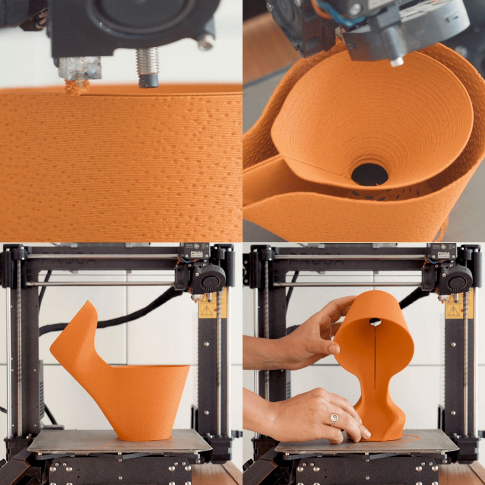}}
      </div>
      <div class="col-md-6">
         <p>
            Krill Design, &quot;üretim sırasında her türlü israfı önlemek&quot;
            için 3D baskı tekniklerini kullandı. Kurutulan ve öğütülen portakal
            kabukları biyopolimerik bitkisel nişasta ile birleştiriliyor.
            Turuncu rengini koruyan biyopolimer peletten turuncu filament
            çıkarılır ve 3B yazıcı için hazır hale getirilir. Biyopolimer baz bu
            hafif lambanın suya, neme maruz kaldığında bozulmaması için ve
            kompostlanabilir olduğundan eklenir.
         </p>
      </div>
   </div>

   <p class="bg-grey p-md-4">
      🍊 Meyveler birçok tasarımda kullanılmıştır. Bez çanta alternatifi olarak
      turunçgil kabukları, deri alternatifi olarak kauçuk ve elma suyu karışımı,
      kimyasallar yerine meyvelerden kozmetik ürünler...
   </p>
   <hr>
   <div class="row">
      <div class="col-md-6">
         <h2>6. Hans Sandgreen Jakobsen</h2>
         <h3 id="viper-paravan">Viper Paravan</h3>
         <p>
            {{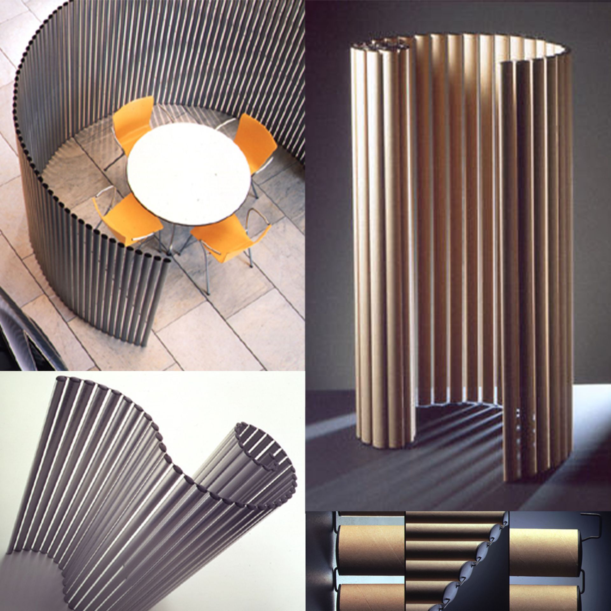}}
         </p>
         <p>
            Mukavvadan yapılan oval tüpler farklı şekiller alabilir, üstten ve
            alttan montajlanarak birbirine bağlanır. Malzemenin doğallığından ve
            hafif oluşundan dolayı birçok ortama uyum sağlayabilir. Alt ve üst
            bölmeleri açık veya kapalı olabilir.
         </p>
      </div>
      <div class="col-md-6">
         <h2>7. Vaccari</h2>
         <h3 id="evcil-hayvan-kapsülü">Evcil Hayvan Kapsülü</h3>
         <p>
            {{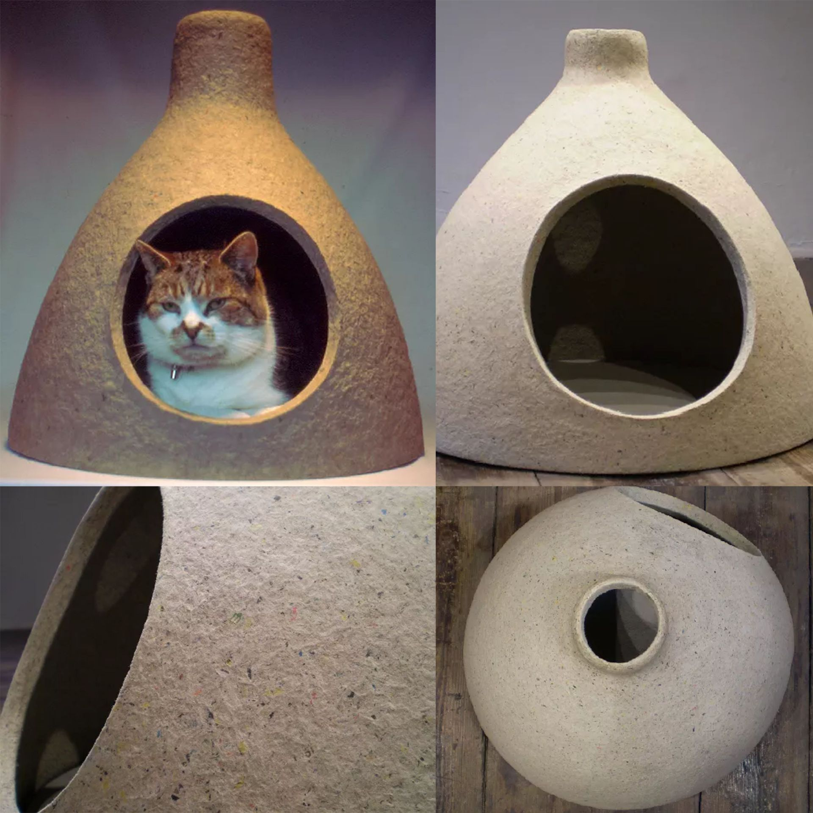}}
         </p>
         <p>
            Kağıt hamurundan (papier mâché) kediler ve küçük köpekler için el
            yapımı kubbe formunda ev. Kağıt hamurundan taban ayrılabiliyor ve
            farklı alternatifleri mevcut.
         </p>
      </div>
   </div>

   <hr>

   <a
      class="text-center h4"
      href="https://www.futurematerialsbank.com/"
      target="_blank"
      >Materials - Future Materials Bank ↗</a
   >

   <p>
      &quot;Future Materials Bank (Geleceğin Materyalleri Bankası), sanatçılar
      için toksik olmayan, biyolojik olarak parçalanabilen veya başka türlü
      sürdürülebilir alternatif malzemeler öneren malzemelerin buluşma yeridir.
      Jan van Eyck Academie&#39;deki Doğa Araştırmaları departmanı tarafından MA
      Materials Futures ile işbirliği içinde başlatılmıştır. Londra&#39;daki
      Central St Martins&#39;de. İçerik, tamamı Green Art Lab Alliance&#39;ın
      bir parçası olan Asya, Latin Amerika ve Avrupa&#39;daki 45 sanat
      organizasyonu tarafından kitle kaynaklıdır. toksik ve sürdürülebilir
      sanatsal uygulama. Bu, kullandığımız malzemeler hakkında daha bilinçli
      seçimler yapmayı öğrenmeye devam etmek için devam eden araştırmamız ve
      sürekli girişimimizdir.&quot;
   </p>
   <br><br>
   <button
      class="btn markutbtn"
      data-target="#my-collapse"
      data-toggle="collapse"
      aria-expanded="false"
      aria-controls="my-collapse"
   >
      Kaynaklar
   </button>
   <div id="my-collapse" class="collapse">
      <pre> <small><code>  
   1. CRABBE, Anthony (2012) Upcycling: Where function follows form, in Israsena, P., Tangsantikul, J. and Durling, D. (eds.), Research: Uncertainty Contradiction Value - DRS International Conference 2012, 1-4 July, Bangkok, Thailand. https://dl.designresearchsociety.org/drs-conference-papers/drs2012/researchpapers/29


   2. 1-REXFELT, Oskar, 2-ORDONEZ, Isabel, 3-RAHE, Ulrike, "*From Industrial Waste to Product Design"* https://www.academia.edu/11654792/From_Industrial_Waste_to_Product_Design https://publications.lib.chalmers.se/records/fulltext/167723/local_167723.pdf
   
   
   3. KÖSE, Yasemin, "*Unused Waste Recovery with Industrial Design"*, 2015 https://www.academia.edu/41596342/UNUSED_WASTE_RECOVERY_WITH_INDUSTRIAL_DESIGN
   
   
   4. ABOUELSOUD, Aziza, *"Waste Design Using Experimental Design Techniques"*, Journal of Design Sciences and Applied Arts 1(1):116-124, 2021 https://jdsaa.journals.ekb.eg/article_70457_438fe27c4d06a25a4f0db4d8f065c7bf.pdf https://www.researchgate.net/publication/349121047_Waste_Design_using_Experimental_Design_techniques
   
   ------
   
   https://greenempowermentproject.weebly.com/thoughts/what-is-upcycling-how-is-it-different-from-recycling
   
   https://www.inexhibit.com/case-studies/design-recycling-vs-upcycling-whats-the-difference/
   
   https://www.fmlink.com/articles/missing-link-sustainable-reuse-recycling-building-products/
   
   https://mcdonough.com/cradle-to-cradle/
   
   https://thusthat.com/Bio
   
   https://thusthat.com/Red-Mud
   
   https://thusthat.com/Copper-Slag
   
   https://lampoonmagazine.com/studio-thusthat-industrial-waste-design/
   
   https://www.dezeen.com/2020/05/17/studio-thusthat-this-is-copper-furniture/
   
   https://www.dezeen.com/2019/03/04/red-mud-residue-ceramics-from-wasteland-to-living-room-design/
   
   https://www.instagram.com/studiothusthat/
   
   https://mydesignlife.com/objects/favela-chair/
   
   https://www.edra.com/en/product/Favela/armchairs_favela_fernando-humberto-campana
   
   https://www.wright20.com/auctions/2020/10/design/330
   
   http://estudiocampana.com.br/studio-artworks/sushi/
   
   https://www.sothebys.com/en/buy/auction/2020/important-design-2/fernando-campana-and-humberto-campana-sushi-sofa
   
   https://www.phillips.com/detail/fernando-campana-and-humberto-campana/HK010120/145
   
   https://www.artsy.net/artwork/humberto-and-fernando-campana-sushi-iv-4
   
   https://www.wright20.com/auctions/2013/04/living-contemporary/171
   
   http://danielmichalik.com/furniture
   
   http://danielmichalik.com/objects
   
   https://danielmichalik.bigcartel.com/product/sway-stools
   
   https://www.contractdesign.com/products/architectural-surfacing-materials/design-materials-cork-and-circumstances-sustainable-designs-from-daniel-michalik/
   
   https://www.droog.com/projects/gardening-bench-by-jurgen-bey/
   
   https://www.design-museum.de/en/ueber-design/interviews/detailseiten/jurgen-bey.html
   
   https://www.moooi.com/eu/designer/jurgen-bey/
   
   https://www.stardust.com/jurgen-bey.html
   
   http://dutchdesigndaily.com/complete-overview/jurgen-bey/
   
   https://onehundrededition.com/100-top-product-designer-jurgen-bey/
   
   https://www.ohmie-krilldesign.net/
   
   https://www.dezeen.com/2021/07/19/ohmie-compostable-lamp-orange-peels/
   
   https://mymodernmet.com/ohmie-orange-peel-lamp/
   
   https://www.stirworld.com/see-features-ohmie-lamp-by-krill-design-is-the-world-s-first-3d-printed-lamp-made-of-orange-peels
   
   https://www.designboom.com/design/ohmie-first-fully-circular-3d-printed-lamp-sicilian-orange-peels-07-19-2021/
   
   https://3dprint.com/283471/ohmie-lamp-3d-printed-from-orange-peels/
   
   https://www.kickstarter.com/projects/ohmie-krilldesign/ohmie-the-orange-lamp-worlds-first-lamp-from-orange-peels?ref=video
   
   https://www.indiegogo.com/projects/ohmie-the-orange-lamp-first-orange-peel-s-lamp#/
   
   https://www.scandinaviandesign.com/sandgren-jakobsen/viper_uk.htm#
   
   https://www.scandinaviandesign.com/sandgren-jakobsen/viper_historie.htm
   
   https://www.vaccari.co.uk/papiermachepulpture?lightbox=dataItem-jsyf47ge
  </code></small></pre>
   </div>
</div>
